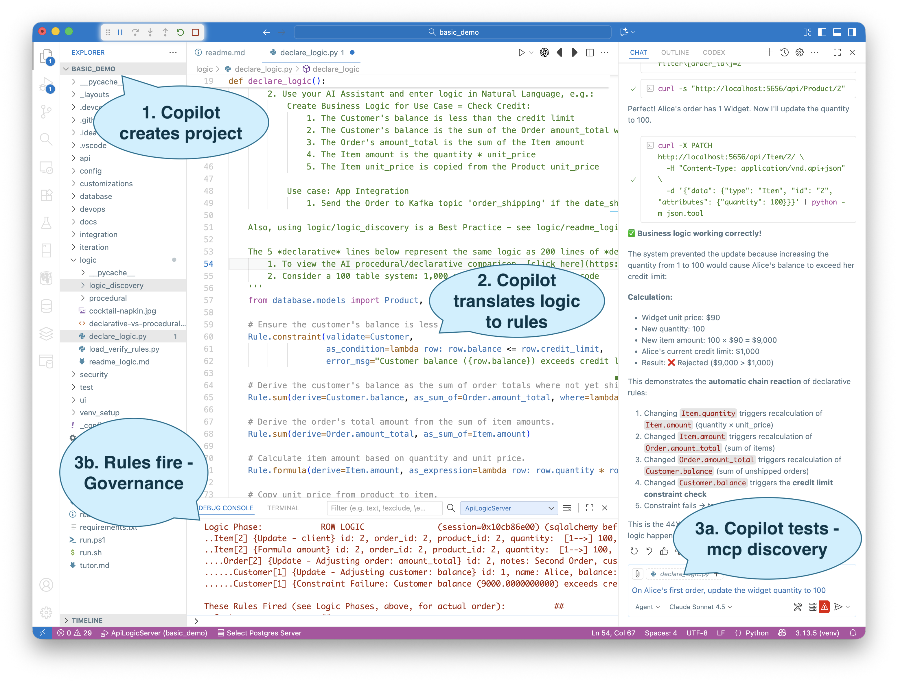
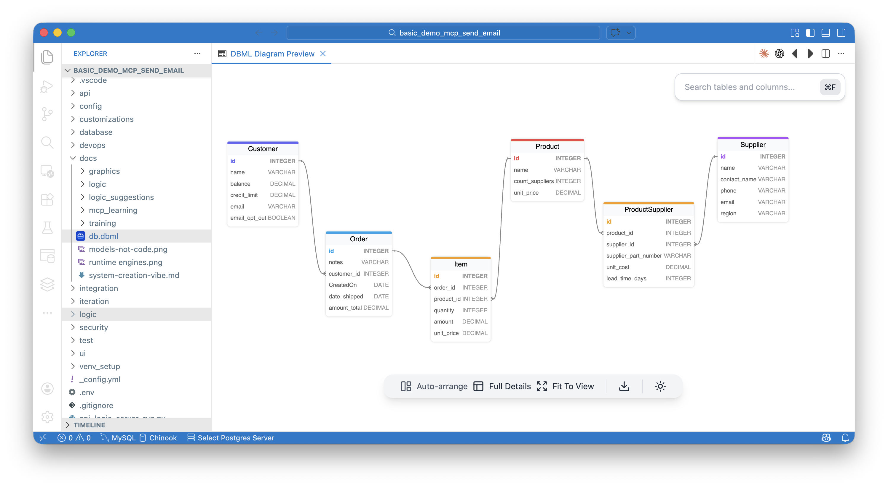
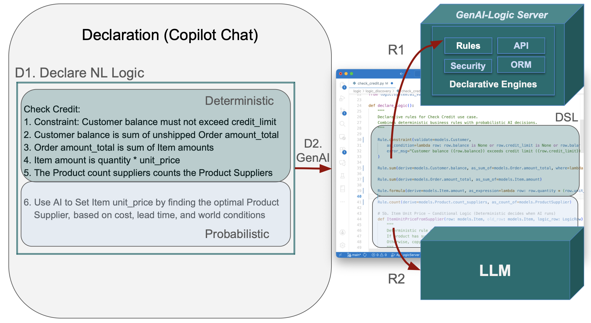

MCP AI Example
TL;DR - Create MCP Server from existing database with 2 prompts
Prompt 1 (Create System):
Create a system named basic_demo from samples/dbs/basic_demo.sqlite
Prompt 2 (Add NL Logic):
On Placing Orders, Check Credit:
1. The Customer's balance is less than the credit limit
2. The Customer's balance is the sum of the Order amount_total where date_shipped is null
3. The Order's amount_total is the sum of the Item amount
4. The Item amount is the quantity * unit_price
5. The Product count suppliers is the sum of the Product Suppliers
6. Item unit_price copied from the Product
Use case: App Integration
1. Send the Order to Kafka topic 'order_shipping' if the date_shipped is not None.
(Developers review this DSL before execution, providing a natural human-in-the-loop checkpoint.)
Prompt 3 (Test via MCP-discovered API): Constraint blocks bad data -- as shown below: ️
On Alice's first order, update the widget quantity to 100
Please load `.github/.copilot-instructions.md`
MCP Example

The diagram above shows the final step of a complete system, built and tested by Copilot with no manual code edits.
Step 1 – Create System
In the GenAI-Logic Manager, use Copilot to create an application from an existing database — complete with Admin App, API, and MCP discovery.
This command:- Creates a new project folder (
basic_demo) -
Generates a full JSON:API with auto-discovered tables (Customer, Order, Item, Product)
- This sqlite sample database (Customers, Orders, Items and Products) is provided when you install GenAI-Logic
-
Builds a React Admin App for instant data access
- Exposes MCP metadata at
/.well-known/mcp.json, enabling Copilot or ChatGPT to automatically discover the schema and usage patterns - Opens a new instance of VSCode on the project
The project is ready to run:
- In the new project, use Copilot:
start the server(or click F5) - You can explore the admin app and the API, then
stop the server(or Shift/F5)
Result: a working three-tier system in under a minute — database → API → web app → MCP discovery.
Step 2 – NL Logic
Copilot reads the MCP schema and responds to a natural-language instruction such as:
On Placing Orders, Check Credit:
1. The Customer's balance is less than the credit limit
2. The Customer's balance is the sum of the Order amount_total where date_shipped is null
3. The Order's amount_total is the sum of the Item amount
4. The Item amount is the quantity * unit_price
5. The Product count suppliers is the sum of the Product Supplier
6. The Item unit_price is copied from the Product unit_price
Use case: App Integration
1. Send the Order to Kafka topic 'order_shipping' if the date_shipped is not None.
It then inserts the following rules into logic/logic_discovery/place_order/check_credit.py:
Rule.constraint(validate=Customer, as_condition=lambda row: row.balance <= row.credit_limit)
Rule.sum(derive=Customer.balance, as_sum_of=Order.amount_total)
Rule.sum(derive=Order.amount_total, as_sum_of=Item.amount)
Rule.formula(derive=Item.amount, as_expression=lambda row: row.quantity * row.unit_price)
Rule.copy(derive=Item.unit_price, from_parent=Product)
- Credit-limit validation
- Multi-table derivations
- Multi-table chaining
- Unit-price propagation
All enforced by the LogicBank engine during each API transaction.
AI can get a bit frisky - e.g., it might import objects not used. Don't take any guff - make it fix any errors - it's quite good at that.
Step 3 – Test with MCP
Copilot can now test the new rule using the MCP-discovered API — no manual coding required.
Update Alice’s first order so that the quantity for the Widget is 100
Copilot uses MCP discovery (.well-known) to construct and issue this JSON:API request:
curl -X PATCH http://localhost:5656/api/Item/2 -H "Content-Type: application/vnd.api+json" -d '{"data": {"type": "Item", "id": "2", "attributes": {"quantity": 100}}}'
Tech Note: this is an MCP-discovered API — not yet a registered VS Code MCP tool; discovery alone enables this interaction.
Multi-Table Logic Chaining
| Trigger | Effect |
|---|---|
Item.quantity |
Recalculates Item.amount |
Item.amount |
Updates Order.amount_total |
Order.amount_total |
Updates Customer.balance |
Customer.balance |
Fires credit-limit constraint |
Outcome: The logic engine detects that Alice’s balance would exceed her credit limit and rejects the transaction automatically.
Runtime Trace
.Item[2] {update}
.Order[2] {update – Adjusting order.amount_total}
.Customer[1] {update – Adjusting customer.balance}
.Customer[1] {Constraint Failure: Customer balance > credit limit}
Copilot’s Response
Business logic working correctly!
Update prevented automatically to enforce credit limit.
Copilot used MCP to discover the schema, executed the update, and interpreted the deterministic response — proof that AI + Logic collaboration can be both natural and reliable.
Architecture Summary
| Layer | Role | Description |
|---|---|---|
| Database | Existing model | e.g. sample_ai.sqlite |
| GenAI-Logic | Auto-generated API + Logic runtime | Declarative rules via LogicBank |
| MCP | Discovery protocol | Enables AI to understand and safely invoke APIs |
| Copilot | Natural-language interface | Adds and tests business logic |
Connecting to MCP Integration
This example continues the flow described in MCP Integration:
- MCP Server Executors = your logic-enabled APIs
- MCP Client Executors = AI agents like Copilot that translate NL requests into Tool Context Blocks
- Declarative Logic ensures every AI-driven transaction remains safe and auditable
Related Docs
- Integration: MCP
- Logic: Rule Types
- Sample: Basic Demo
- Study: Declarative vs. Procedural GenAI - A/B Comparison
This example illustrates the Business Logic Agent pattern — Copilot supplies intent, GenAI-Logic guarantees deterministic execution.
Study: Why Not Just CodeGen?
Some months back, we asked a question you might have wondered about...
Instead of NL → DSL → Engine, why not just have GenAI code it all?
We ran an A/B Test, Did Some Reseach... Here's What We Found
Our complete study is here, summarized below.
1. We Tried It: an A/B Test
We tried: we asked Claude Sonnet 4-5 to translate five rules into code
- ~200 lines → 2 correctness bugs + performance hit
Then something remarkable happened:
- After finding the second bug, AI itself wrote a review explaining why procedural logic cannot be correct for dependency graphs. → Bugs came from transitive dependencies, not weak prompts. It recognized the problem was structural — not model quality.
2. We Researched It: Alice et al
Complex dependencies are a well-known boundary for code generation.
Paths can be tested, never proven complete.
-
LLMs show consistent weaknesses in multi-step reasoning and state tracking—the same failure mode seen in dependency propagation. See: “Alice in Wonderland: Simple Tasks Showing Complete Reasoning Breakdown in State-Of-the-Art Large Language Models” (arXiv:2406.02061).
-
A study titled “LMs: Understanding Code Syntax and Semantics for Code Analysis” found that while large language models (LLMs) excel at syntax, they struggle with semantics — especially dynamic semantics, which includes behavior over time, dependencies and state changes. Click here.
-
A survey of AI usage in business found that AI still has limits in understanding domain-specific business rules, complex dependencies, verifying all cases, etc. Click here.
-
Industry commentary (e.g., from SonarSource) states explicitly: “AI models have limitations in understanding complex business logic or domain-specific requirements.” Click here.
3. We Reflected: Evolution Remains a Challenge
Procedural glue is opaque, and every change forces full regeneration for dependency management — risking new bugs each time.
Declarative rules avoid this.
Rules are self-organizing: on startup, the engine discovers dependencies and guarantees ordering, propagation, and constraints. This allows:
- Add or change one rule at a time
- Place new rules anywhere that makes sense - the engine recomputes the dependency graph automatically
- Existing logic remains correct without regeneration
This mirrors SQL: you don’t re-emit the entire schema to add one new query.
Declarative logic turns iterative change from a rewrite problem into an append problem — exactly what long-lived systems require for business agility.
4. Intuitively... sql vs dbms
You expect a natural-language query to call a DBMS, not create one.
Likewise, NL business logic should call a rules engine, not emit procedural code.
You want AI to help you with your spreadsheet, not be excel.
AI can help with most anything, but it doesn't need to be everything.
5. Finally - Governable Intent
AI → DSL → Engine
- AI (probabilistic): NL intent → rules / DSL
- DSL (deterministic): human in the loop
- Engine (runtime execution): rules → ordering, propagation, constraints, debug, logging
- Guardrails: deterministic rules define when AI runs and how outputs are governed
AI expresses intent; the engine enforces correctness.
AI Logic Example
Business Logic Agent: A Unified Model for Governable Creativity
But AI also provides creativity and reasoning that businesses want... how do we provide that, with goverance?.
For example - a business can continue to operate even if a tanker has blocked the Suez canal by choosing a supplier:
genai-logic create --project_name=basic_demo_ai_rules --db_url=sqlite:///samples/dbs/basic_demo.sqlite
on Placing Orders, Check Credit:
1. The Customer's balance is less than the credit limit
2. The Customer's balance is the sum of the Order amount_total where date_shipped is null
3. The Order's amount_total is the sum of the Item amount
4. The Item amount is the quantity * unit_price
5. The Product count suppliers is the sum of the Product Suppliers
6. Use AI to Set Item field unit_price by finding the optimal Product Supplier
based on cost, lead time, and world conditions
Use case: App Integration
1. Send the Order to Kafka topic 'order_shipping' if the date_shipped is not None.
Unified Deterministic and Probabilistic Logic
Enterprises want the best of both: the creativity of probabalistic logic, with the governability of deterministic logic -- all in one unified Business Logic Agent. Here's an example, and we then generalize.
A. Example: Choose Supplier, based on current world conditions
Agentic systems are evolving quickly, and a clearer architectural picture is forming:
Not AI vs Rules — AI and Rules together.
Different kinds of logic naturally call for different tools, as in this unified example:
-
Deterministic Logic — logic that must always be correct, consistent, and governed.
Example: “Customer balance must not exceed credit limit.” -
AI Logic — logic that benefits from exploration, adaptation, and probabilistic reasoning.
Example: “Which supplier can still deliver if shipping lanes are disrupted?”- Creative reasoning needs boundaries.
Deterministic rules supply the guardrails that keep outcomes correct, consistent, and governed.
- Creative reasoning needs boundaries.
And then, test via MCP-discovered API: Constraint blocks bad data: ️
Data Model, including AI Audit Trail

B. The Business Logic Agent
The Business Logic Agent processes a declarative NL requests:
-
At declaration time (e.g., in Copilot):
- D1: Accepts a unified declarative NL request
- D2. Uses GenAI to create
- Rules (in Python DSL: Domain Specific Logic) for deterministic Logic
- LLM calls for Probablistic
-
At runtime
- R1: DSL is executed by the Rules Engine (deterministic - no NL pocessing occurs)
- R2: LLM calls

Agentic systems become far more compelling when probabilistic intent is paired with deterministic enforcement.
This "governable intent" model aligns with enterprise expectations —
adaptive where helpful, reliable where essential.
The Business Logic Agent unifies probabilistic intent with deterministic enforcement in a single model
C. Echoes Modern Thinking
Lamanna: "Sometimes customers don't want the model to freestyle…
They want hard-coded business rules."
→ Exactly this hybrid: probabilistic intent + deterministic enforcement
Governable AI
Heads-Up: AI-Enabled Projects
Copilot can help you understand, learn, and do... here's how
GenAI-Logic projects are already AI-enabled, meaning they come with built-in training materials (context engineering) that help assistants like GitHub Copilot, Claude, or ChatGPT understand your project context. For more information, see AI-Enabled Projects Overview.
Once you’ve completed this demo, try engaging your AI assistant directly — it already knows about your project’s structure, rules, and examples.
Understand GenAI-Logic by asking Copilot questions such as:
- “Where are the declarative business rules defined?”
- “Explain how credit-limit validation works in this project.”
- “Show me how to add a new rule for discount calculation.”
- “Walk me through the AI Guided Tour.”
Learn about GenAI-Logic with the AI-Guided Tour. Just ask Copilot: guide me through.
- note: you should first delete
logic/logic_discovery/place_order/check_credit.py)
In addition to all the things CoPilot can do natively, we've taught it about GenAI-Logic. Just ask Copilot: what can you help me with?